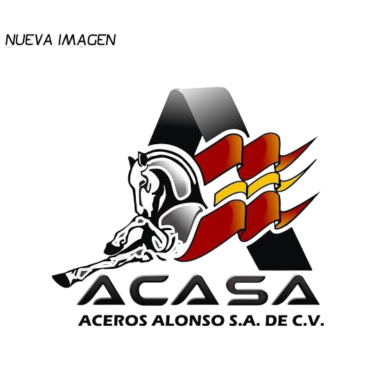

PATROCINADORACASA Aceros Alonso
ACASA Aceros Alonso es una empresa dedicada a la distribución de acero, materiales para construcción y productos metalúrgicos en la región de la Huasteca Hidalguense, principalmente en Huejutla de Reyes.
La empresa se ha consolidado como uno de los proveedores más importantes para herreros, soldadores, albañiles, constructoras y trabajadores del sector de la construcción.
Horario
Lunes a viernes: 08:00 a 18:00 hrs
Sábado: 08:00 a 14:00 hrs
Domingo: Cerrado
Contacto
789 896 2120
789 896 2141

 PATROCINADOR
PATROCINADOR
Laboratorio Fleming
El Laboratorio Fleming es un centro de diagnóstico clínico con más de 20 años de trayectoria en la Huasteca Hidalguense.
Ofrece una amplia gama de análisis médicos en áreas como hematología, inmunología y microbiología, respaldados por personal altamente profesional.
Dirección
Av. Corona del Rosal No. 39, Col. 5 de Mayo, frente a oficinas CFE, Huejutla de Reyes, Hgo.
Contacto
(771) 163-6172
sbvo191192@gmail.com

 PATROCINADOR
PATROCINADOR
Crown Dental
Crown Dental, dirigida por la Dra. Gabriela San Juan Hernández, es un consultorio odontológico especializado en tratamientos dentales generales y estéticos en Huejutla de Reyes.
La clínica ofrece atención profesional, modernas instalaciones y tratamientos especializados para el cuidado bucodental.
Servicios
Coronas estéticas
Extracciones
Limpiezas dentales
Endopostes y curetaje
Contacto
+52 833 236 7591
+52 883 354 6888

Titanium Sport Gym
Titanium Sport Gym es uno de los centros deportivos más modernos de Huejutla de Reyes, reconocido por sus instalaciones amplias y equipos de última generación.
Los usuarios destacan la limpieza, el mantenimiento constante y la excelente atención brindada por el personal.
Características
Amplio espacio
Equipos modernos
Atención personalizada
Estacionamiento disponible
Horarios
Lunes a viernes:
5:30 a.m. – 11 p.m.
Sábado:
8 a.m. – 6 p.m.
Domingo:
8 a.m. – 4 p.m.